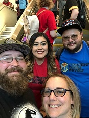

We collect Funko Pop! figures and have amassed over 250 in our collection. We share some, but then we each have our own. Some of the genres we share are Marvel characters, Chicago sports figures, anime, The Office, and some random TV shows or movies. My husband is a horror fan and has a large collection of pop figures og his own, while my collection contains Seinfeld, Parks and Rec, and Peanuts. This picture is just small part of our entire collection. Below is a picture of some of our shared Pops!
We met Jon Bernthal at Ace Comic Con in 2018.
This is Chuck and I at Phoenix Fan Fusion in 2018.
This is us with our close friends at Phoenix Fan Fusion in 2019.
This is us with our close friends at Phoenix Fan Fusion in 2019 meeting Jeff Goodblum.
One day we want to be able to go to C2E2 back home in Chicago, New York Comic Con, and Emerald City Comic Con in Seattle. It is so much fun when we go to these and we have met many different people including Jon Bernthal, Jeff Goldblum, Ricco Fajardo, Zachary Levi, Bruce Campbell, Robin Lord Taylor, Billie Dee Williams, and Michael Rooker.
This is a photo of my husband, Chuck, and I after hiking South Mountain in Phoenix. One thing I love to do is workout. I workout six days a week, every morning before work and on Sundays. I like to run, walk, bike, spin classes, weight train, pilates, and yoga to name a few. It helps me to clear my mind and get ready for my day as it is my quiet time.
I also enjoy playing video games. Right now Mario Kart and Animal Crossing: New Horizon are what I spend my time playing. I also enjoy watching content creators on Twitch play video games. I watch various games and creators. It usually depends on my mood what game I watch.
I also enjoy reading and playing with my dogs. Rossy is going to be eleven this year and Parker will be three. They can be quite the handful, but so much fun.
One of my interests is astronomy. That was my favorite class the first time I was in college and I love being up and going for a run at 4 a.m. I get to see all the starts and watch the constellations move across the sky throughout the year. I also get to see the different phases of the moon and watch the planets as they come into view.
I earned my Bachelor of Science in Environmental Science in 2014 from American Public University.
I am currently working on my Bachelor of Science in Software Development from Bellevue University.
If learning could be a career, I would love to do that forever. If I pursue another degree, it would be in full stack web development.
I have worked in many different positions throughout my career, from entry level to the management team, over the last 25 years. I have worked in accounts payable, accounts receivable, collections, order pulling, receiving, stock, customer service, and most recently billing supervisor. I enjoy being challenged and love to know all of the why's and how's for the companies I have worked for. I want to be the person that can answer all of the questions with confidence.
I currently work for the top environmental service provider in the nation, Waste Management. I recently celebrated my nine year anniversary. When I was hired in 2013, I was an entry level bill clerk. I was soon promoted to a bill clerk II in 2014, then a bill clerk III soon after, and in 2015 I was promoted to billing supervisor. I currently manage six team members and our market area is Southern California, one of the largest in the company. We bill about 60 million dollars monthly and cover all services from residential to commercial to construction to landfill. We have additional services such as hazardous waste disposal and remediation as well as community hazardous waste events and propane delivery.